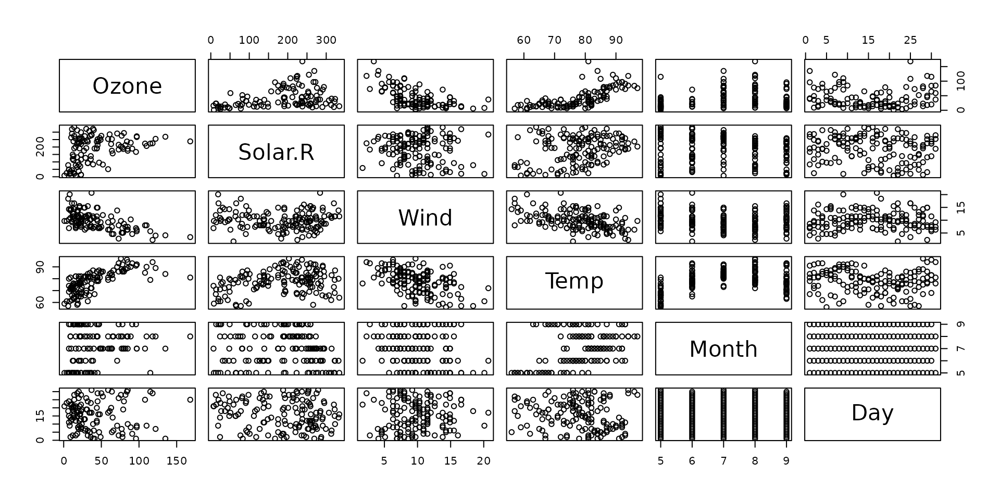
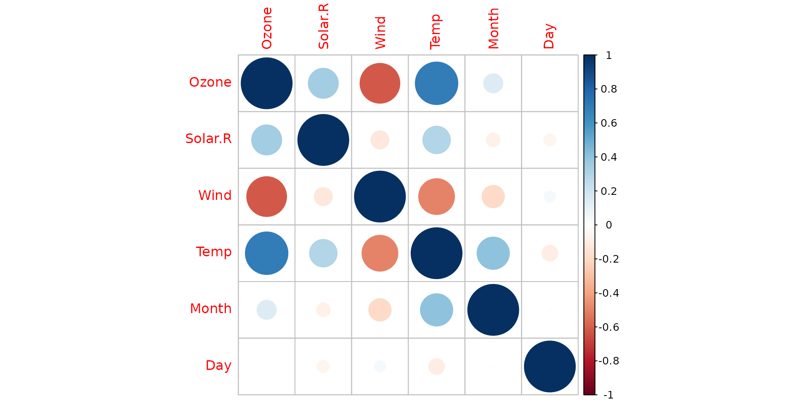
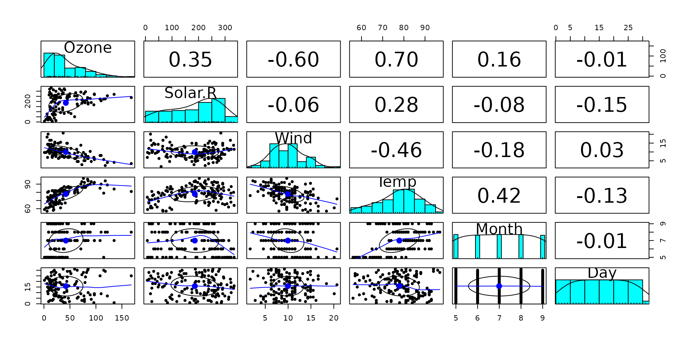
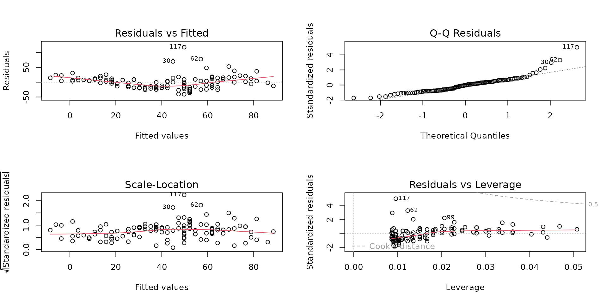
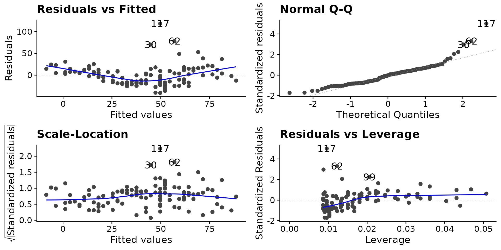
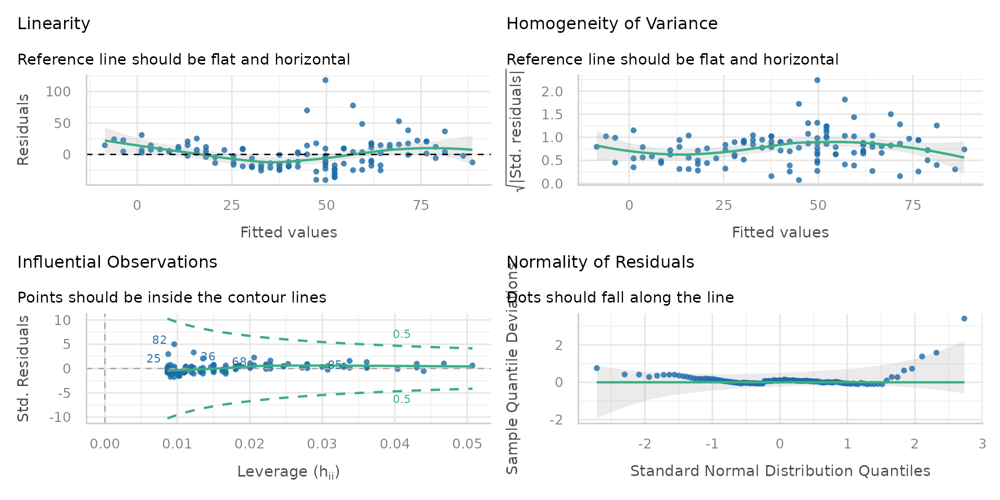
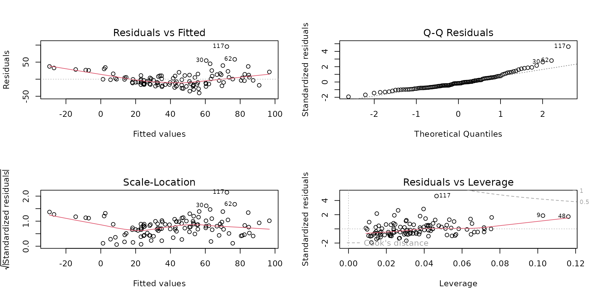

Topic 11 – Multiple Linear Regression
ENVX1002 Statistics in Life and Environmental Sciences
The University of Sydney
Feb 2026
Module overview
- Week 9. Describing Relationships
- Correlation (calculation, interpretation)
- Regression (model structure, model fitting
- What/when/why/how
- Week 10. Simple Linear Regression
- Can we use the model?(assumptions, hypothesis testing)
- How good is the model?(interpretation, model fit)
- Week 11. Multiple Linear Regression
- Multiple Linear Regression (MLR) modelling
- Assumptions, interpretation and the principle of parsimony
- Week 12. Nonlinear Regression
- Common nonlinear functions
- Transformations
Last week: simple linear regression
\[ Y_i = \beta_0 + \beta_1 x_i + \epsilon_i \]
Ideal for predicting a continuous response variable from a single predictor variable: “How does \(y\) change as \(x\) changes?”
- Identify/quantify relationships between variables
- Predict future values
What if we have more than one predictor?
What is the model and how do we interpret the results?
Multiple linear regression
Nearly identical to simple linear regression, just more predictors!
History

Francis Galton and Karl Pearson
- First suggested by Francis Galton in 1886 while studying genetic variations in sweet peas over several generations
- Karl Pearson developed the mathematical formula for multiple linear regression model later (early 1900s)
“The somewhat complicated mathematics of multiple correlation, with its repeated appeals to the geometrical notions of hyperspace, remained a closed chamber to him.”
– Pearson (1930), on Galton’s work with MLR
Steps for Regression
- Understand the variables
- Explore data
- Fit model
- Check assumptions
- Assess fit of model/s (parsimony)
- Interpret output
Example: Air Quality in New York (1973)
Rows: 153
Columns: 6
$ Ozone <int> 41, 36, 12, 18, NA, 28, 23, 19, 8, NA, 7, 16, 11, 14, 18, 14, …
$ Solar.R <int> 190, 118, 149, 313, NA, NA, 299, 99, 19, 194, NA, 256, 290, 27…
$ Wind <dbl> 7.4, 8.0, 12.6, 11.5, 14.3, 14.9, 8.6, 13.8, 20.1, 8.6, 6.9, 9…
$ Temp <int> 67, 72, 74, 62, 56, 66, 65, 59, 61, 69, 74, 69, 66, 68, 58, 64…
$ Month <int> 5, 5, 5, 5, 5, 5, 5, 5, 5, 5, 5, 5, 5, 5, 5, 5, 5, 5, 5, 5, 5,…
$ Day <int> 1, 2, 3, 4, 5, 6, 7, 8, 9, 10, 11, 12, 13, 14, 15, 16, 17, 18,…Ozone (\(O_3\)) is a harmful air pollutant at ground level - the main component of smog:
Ozone: ozone concentration (ppb)Solar.R: solar radiation (lang, Langleys)Wind: wind speed (mph)Temp: ambient temperature (degrees F)Month: month (1-12)Day: day of the month (1-31)
Scatterplots
Correlations via base R
Ozone Solar.R Wind Temp Month Day
Ozone 1.00 0.35 -0.61 0.70 0.14 -0.01
Solar.R 0.35 1.00 -0.13 0.29 -0.07 -0.06
Wind -0.61 -0.13 1.00 -0.50 -0.19 0.05
Temp 0.70 0.29 -0.50 1.00 0.40 -0.10
Month 0.14 -0.07 -0.19 0.40 1.00 -0.01
Day -0.01 -0.06 0.05 -0.10 -0.01 1.00Correlations via corrplot
Correlations via psych
- What predictors could be useful to predict
Ozone?
Temp (\(r\) = 0.70), Wind (\(r\) = -0.60) and Solar.R (\(r\) = 0.35) are the most correlated with Ozone.
What can we understand about the relationship between Ozone and Temp (\(r\) = 0.70)?
Relationship
What can we understand about the relationship between Ozone and Temp (\(r\) = 0.70)?
The higher the temperature, the higher the ozone concentration. The relationship is almost linear.
Fitting a simple model
- Simple linear regression between
OzoneandTemp - This is our baseline or control model
Assumptions via base R
Assumptions via ggfortify package
Assumptions via performance package
Interpretation
Call:
lm(formula = Ozone ~ Temp, data = airquality)
Residuals:
Min 1Q Median 3Q Max
-40.729 -17.409 -0.587 11.306 118.271
Coefficients:
Estimate Std. Error t value Pr(>|t|)
(Intercept) -146.9955 18.2872 -8.038 9.37e-13 ***
Temp 2.4287 0.2331 10.418 < 2e-16 ***
---
Signif. codes: 0 '***' 0.001 '**' 0.01 '*' 0.05 '.' 0.1 ' ' 1
Residual standard error: 23.71 on 114 degrees of freedom
(37 observations deleted due to missingness)
Multiple R-squared: 0.4877, Adjusted R-squared: 0.4832
F-statistic: 108.5 on 1 and 114 DF, p-value: < 2.2e-16Tempis a statistically significant predictor ofOzone(p < .001).- The (simple linear) model explains 49% of variance (R2 = 0.49).
Can we improve the model in other ways? Maybe - by transforming or adding more variables.
Principle of parsimony
- Also known as Occam’s razor;
Entia non sunt multiplicanda praeter necessitatem. “Entities should not be multiplied without necessity.”
- Oxford definition;
The most acceptable explanation of an occurrence, phenomenon, or event is the simplest, involving the fewest entities, assumptions, or changes.
- Simple is best; i.e. if a simple (one variable) model and a complex (many variables) model predict similarly well, the simple model is preferred.
A parsimonius model:
- Has only useful predictors
- No redundant predictors
The problem with using too many predictors
- Generally, the more predictors we add, the better the model fits data
- However, adding too many may cause overfitting, i.e. the model becomes too complex
- An overfitted model won’t be able to generalise to new data

The multiple linear regression model
An extension of simple linear regression to include more than one predictor variable: “How does \(y\) change as \(x_1\), \(x_2\), …, \(x_k\) change?”
\[ Y_i = \beta_0 + \beta_1 x_1 + \beta_2 x_2 + ... + \beta_k x_k + \epsilon_i \]
Therefore, estimating the model involves estimating the values of \(\beta_0\), \(\beta_1\), \(\beta_2\), …, \(\beta_k\).
- \(\beta_0\) is the intercept
- \(\beta_1\) to \(\beta_k\) are the partial regression coefficients
- \(\epsilon\) is the error (residual) term
Fit MLR model to Air Quality data
The variables Month and Day are not useful predictors, so we will exclude them from the model.
Visualisation: not easy
Are the plots useful?
3D plot
Visualisation: not easy
Are the plots useful?
4D plot
Partial regression coefficients
Given the multiple linear model: \[ Y_i = \beta_0 + \beta_1 x_1 + \beta_2 x_2 + ... + \beta_k x_k + \epsilon_i \]
The partial regression coefficient for a predictor \(x_i\) is the amount by which the response variable \(Y\) changes when \(x_k\) is increased by one unit, while all other predictors are held constant.
\[ \beta_k = \frac{\Delta Y}{\Delta x_k} \]
Partial regression coefficients: visualisation
With
WindandSolar.Rheld constant, how doesTempaffectOzone?
Note
Not necessary to do this - lecture content only.
Interpreting the partial regression coefficients
Call:
lm(formula = Ozone ~ Solar.R + Wind + Temp, data = airquality)
Coefficients:
(Intercept) Solar.R Wind Temp
-64.34208 0.05982 -3.33359 1.65209 Holding all other variables constant:
- For every 1 unit increase in
Solar.R,Ozoneincreases by a mean value of 0.06 ppb. - For every 1 degree increase in
Temp,Ozoneincreases by a mean value of 1.65 ppb. - For every 1 unit increase in
Wind,Ozonedecreases by a mean value of 3.33 ppb.
Caution
If the model is not “valid” (via assumptions or hypothesis), then the partial regression coefficients are not meaningful.
Assumptions
In SLR, the model is made up of the deterministic component (the line) and the random component (the error term).
\[ Y_i = \color{seagreen}{\beta_0 + \beta_1 x_i} + \color{firebrick}\epsilon_i \]
This is the same for MLR: \[ Y_i = \color{seagreen}{\beta_0 + \beta_1 x_1 + \beta_2 x_2 + ... + \beta_k x_k} + \color{firebrick}{\epsilon_i} \]
Since only the error term is random, the assumptions are still about the error term (residuals), \(\hat\epsilon\), which is simple to assess!
Assumptions - CLINE
As with Simple Linear Regression, we need to check the assumptions of the model (LINE):
- Linearity: the relationships between the response and the predictors are all linear.
- Independence: the observations are independent of each other.
- Normality: the residuals are normally distributed.
- Equal variance: the variance of the residuals is constant.
With one extra assumption!
- Collinearity: there is no perfect linearity between predictors
Two predictors that have a perfect linear relationship (i.e. \(r\) = 1 or -1) breaks the assumption of collinearity. High (but not perfect) collinearity (e.g. strong/very strong \(r\)) does not break the assumption but can lead to unstable estimates and large standard errors.
The largest correlation between the predictors is between Temp and Wind (\(r\) = -0.5). This is not a problem.
Assumptions of MLR
Transformation using log()
Some evidence of non-linearity in the diagnostic plots. Transform and re-check assumptions.
Results – MLR vs SLR
Call:
lm(formula = log(Ozone) ~ Solar.R + Wind + Temp, data = airquality)
Residuals:
Min 1Q Median 3Q Max
-2.06193 -0.29970 -0.00231 0.30756 1.23578
Coefficients:
Estimate Std. Error t value Pr(>|t|)
(Intercept) -0.2621323 0.5535669 -0.474 0.636798
Solar.R 0.0025152 0.0005567 4.518 1.62e-05 ***
Wind -0.0615625 0.0157130 -3.918 0.000158 ***
Temp 0.0491711 0.0060875 8.077 1.07e-12 ***
---
Signif. codes: 0 '***' 0.001 '**' 0.01 '*' 0.05 '.' 0.1 ' ' 1
Residual standard error: 0.5086 on 107 degrees of freedom
(42 observations deleted due to missingness)
Multiple R-squared: 0.6644, Adjusted R-squared: 0.655
F-statistic: 70.62 on 3 and 107 DF, p-value: < 2.2e-16
Call:
lm(formula = Ozone ~ Temp, data = airquality)
Residuals:
Min 1Q Median 3Q Max
-40.729 -17.409 -0.587 11.306 118.271
Coefficients:
Estimate Std. Error t value Pr(>|t|)
(Intercept) -146.9955 18.2872 -8.038 9.37e-13 ***
Temp 2.4287 0.2331 10.418 < 2e-16 ***
---
Signif. codes: 0 '***' 0.001 '**' 0.01 '*' 0.05 '.' 0.1 ' ' 1
Residual standard error: 23.71 on 114 degrees of freedom
(37 observations deleted due to missingness)
Multiple R-squared: 0.4877, Adjusted R-squared: 0.4832
F-statistic: 108.5 on 1 and 114 DF, p-value: < 2.2e-16- All three predictors are statistically significant (p < .001).
- The MLR model explains 66% of variance (adjusted R2 = 0.66), whereas the SLR explains 48% of variance (multiple R2 = 0.48).
- Thus the MLR is the better model.
Hypothesis Testing
For multiple linear regression, there are two hypothesis tests:
- Individual predictors, where the significance of each predictor is tested via t-tests
\[H_0: \beta_k = 0\] \[H_1: \beta_k \neq 0\]
- The overall model, which is tested with an F-test (to get F-stat). \(H_0\) is an intercept-only model (i.e. the mean), so if at least one predictor is useful, the model is better than the intercept-only model.
\[H_0: \beta_1 = \beta_2 = ... = \beta_k = 0\] \[H_1: \text{At least one } \beta_k \neq 0\]
Interpreting coefficients
Call:
lm(formula = log(Ozone) ~ Solar.R + Wind + Temp, data = airquality)
Coefficients:
Estimate Std. Error t value Pr(>|t|)
(Intercept) -0.2621323 0.5535669 -0.474 0.636798
Solar.R 0.0025152 0.0005567 4.518 1.62e-05 ***
Wind -0.0615625 0.0157130 -3.918 0.000158 ***
Temp 0.0491711 0.0060875 8.077 1.07e-12 ***
---
Signif. codes: 0 '***' 0.001 '**' 0.01 '*' 0.05 '.' 0.1 ' ' 1All three predictors are statistically significant (p < .001). Holding all other variables constant:
- For every 1 unit increase in
Solar.R,log(Ozone)increases by a mean value of 0.0025, - For every 1 unit increase in
Wind,log(Ozone)decreases by a mean value of 0.062, - For every 1 degree increase in
Temp,log(Ozone)increases by a mean value of 0.049.
OR
- For every 1 unit increase in
Solar.R,Ozoneincreases by approximately a mean value of 0.25%, - For every 1 unit increase in
Wind,Ozonedecreases by approximately a mean value of 6.2%, - For every 1 degree increase in
Temp,Ozoneincreases by approximately a mean value of 4.9%.
Model fit
On average, the model predicts log(Ozone) within 0.51 ppb (residual standard error) of the true value. Not bad?
- On average, the model predicts
Ozonewithin 1.67 ppb of the true value. - Degrees of freedom (107) = number of observations (111) - number of parameters in the model (3 predictors and 1 intercept)
If there are >1 predictors, use the adjusted R-Squared as it penalises the model for having more predictors that are not useful.
- The MLR model explains 66% of variance (adjusted R2 = 0.66)
The R2 value
The R-squared value is the proportion of variance explained by the model.
\[ R^2 = \frac{SS_{reg}}{SS_{tot}} = 1 - \frac{SS_{res}}{SS_{tot}} \]
The adjusted R-squared value is the proportion of variance explained by the model, adjusted for the number of predictors.
\[ R^2_{adj} = 1 - \frac{SS_{res}}{SS_{tot}} \frac{n-1}{n-p-1} \]
where \(n\) is the number of observations and \(p\) is the number of predictors.
F-stat
- The F-statistic tests the null hypothesis that all the regression coefficients are equal to zero, i.e. \(H_0: \beta_1 = \beta_2 = ... = \beta_k = 0\).
- As a ratio, it tells us how much better the model is than the null model (i.e. a model with no predictors, the mean).
- If the p-value is less than our specified critical value (e.g. 0.05), we reject the null hypothesis and conclude that the current model is better than the null model.
Reporting
A quick (but not complete) summary:
New York air quality data was collected in 1973 by the New York State Department of Conservation and the National Weather Service (meteorological data). There were 111 observations of 6 variables.
There were non-linear relationships between
Ozone(the response) andTemp,WindandSolar.R(the predictors), hence a natural log transformation was applied toOzone.Multiple linear regression was conducted on these variables, and model assumptions (CLINE) were met.
Solar radiation, wind speed and temperature are significant predictors of Ozone concentration (p < 0.001) with the model accounting for 66% of the variation in log(Ozone). The model explained more variance than a one-predictor model and was found to be significantly better than the null model.
Abalone Quiz

Pop quiz! (No marks, just check your understanding.)
Context
Abalone are marine snails that are a considered a delicacy and very expensive. The older the abalone, the higher the price. Age is determined by counting the number of rings in the shell. To do this, the shell needs to be cut, stained and viewed under a microscope - which is a lot of effort. Researchers measured 9 attributes of the abalone: sex, length, diameter, height, whole, shucked, viscera, shell, and rings.
Note: whole, shucked, viscera and shell are weight measurements.
Code
'data.frame': 100 obs. of 8 variables:
$ length : num 0.52 0.71 0.33 0.67 0.65 0.35 0.695 0.52 0.6 0.61 ...
$ diameter: num 0.405 0.57 0.255 0.55 0.51 0.25 0.53 0.41 0.475 0.48 ...
$ height : num 0.14 0.195 0.095 0.17 0.19 0.1 0.15 0.14 0.15 0.17 ...
$ whole : num 0.692 1.348 0.188 1.247 1.542 ...
$ shucked : num 0.276 0.8985 0.0735 0.472 0.7155 ...
$ viscera : num 0.137 0.444 0.045 0.245 0.373 ...
$ shell : num 0.215 0.454 0.06 0.4 0.375 ...
$ rings : int 11 11 7 21 9 7 14 11 10 10 ...Scatterplots and correlations
We remove sex from the dataset (not numerical), and subset 100 samples for a cleaner view.
Full model
We use natural log transformation on the response variable with log() to account for non-linear relationships.
Call:
lm(formula = log(rings) ~ ., data = abalone)
Residuals:
Min 1Q Median 3Q Max
-0.37297 -0.12727 -0.01584 0.08787 0.61636
Coefficients:
Estimate Std. Error t value Pr(>|t|)
(Intercept) 1.34626 0.18219 7.389 6.57e-11 ***
length -1.25389 1.50969 -0.831 0.40837
diameter 3.24138 1.91481 1.693 0.09388 .
height 2.26408 1.34813 1.679 0.09646 .
whole 0.03089 0.29250 0.106 0.91612
shucked -1.30902 0.38861 -3.368 0.00111 **
viscera -0.24785 0.55098 -0.450 0.65389
shell 1.73328 0.60179 2.880 0.00494 **
---
Signif. codes: 0 '***' 0.001 '**' 0.01 '*' 0.05 '.' 0.1 ' ' 1
Residual standard error: 0.1996 on 92 degrees of freedom
Multiple R-squared: 0.6187, Adjusted R-squared: 0.5897
F-statistic: 21.32 on 7 and 92 DF, p-value: < 2.2e-16All models
Here, the model is fit with all predictors, then the least significant predictor is removed. This process is repeated until only one predictor remains.
Code
library(broom)
full7 <- lm(log(rings) ~ ., data = abalone)
part6 <- update(full7, . ~ . - whole)
part5 <- update(part6, . ~ . - viscera)
part4 <- update(part5, . ~ . - length)
part3 <- update(part4, . ~ . - height)
part2 <- update(part3, . ~ . - diameter)
part1 <- update(part2, . ~ . - shucked)
formulas <- c(part1$call$formula,
part2$call$formula,
part3$call$formula,
part4$call$formula,
part5$call$formula,
part6$call$formula,
full7$call$formula)
rs <- bind_rows(glance(part1),
glance(part2),
glance(part3),
glance(part4),
glance(part5),
glance(part6),
glance(full7)) %>%
mutate(Model = formulas, n = 1:7) %>%
select(Model, n, r.squared, adj.r.squared) %>%
mutate_if(is.numeric, round, 3)
knitr::kable(rs)| Model | n | r.squared | adj.r.squared |
|---|---|---|---|
| log(rings) ~ shell | 1 | 0.445 | 0.439 |
| log(rings) ~ shucked + shell | 2 | 0.557 | 0.548 |
| log(rings) ~ diameter + shucked + shell | 3 | 0.604 | 0.591 |
| log(rings) ~ diameter + height + shucked + shell | 4 | 0.614 | 0.598 |
| log(rings) ~ length + diameter + height + shucked + shell | 5 | 0.618 | 0.597 |
| log(rings) ~ length + diameter + height + shucked + viscera + , shell | 6 | 0.619 | 0.594 |
| log(rings) ~ . | 7 | 0.619 | 0.590 |
Reduced model
How did you do?
Read exam questions carefully and use the process of elimination.
Model and variable selection
- Aim is to achieve the best balance between model fit and model complexity.
- Follow the rules of parsimony: the simplest model that explains the data is the best, given similar model fit.
- Consider the effect of removing non-significant predictors from the model.
- If model fit (i.e. R2) reduces drastically, keep the predictor, else keep culling.
- Covered in more detail in second year (ENVX2001) (stepwise regression)
Summary
Multiple Linear Regression
- More than one predictor
- Fit y to multiple x – multiple dimensions (hyperplane)
- Principle: minimise sum of squared residuals
- Assumptions: CLINE (collinearity)
- Adjusted R-squared
Simple Linear Regression
- One predictor, fit a straight line
- Fit straight line between y and x
- Principle: minimise sum of squared residuals
- Assumptions: LINE
- Multiple R-squared
Thanks!
This presentation is based on the SOLES Quarto reveal.js template and is licensed under a Creative Commons Attribution 4.0 International License.